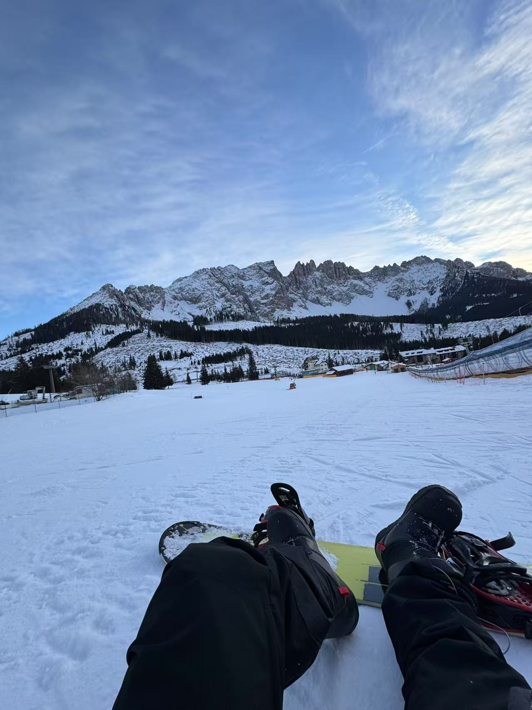
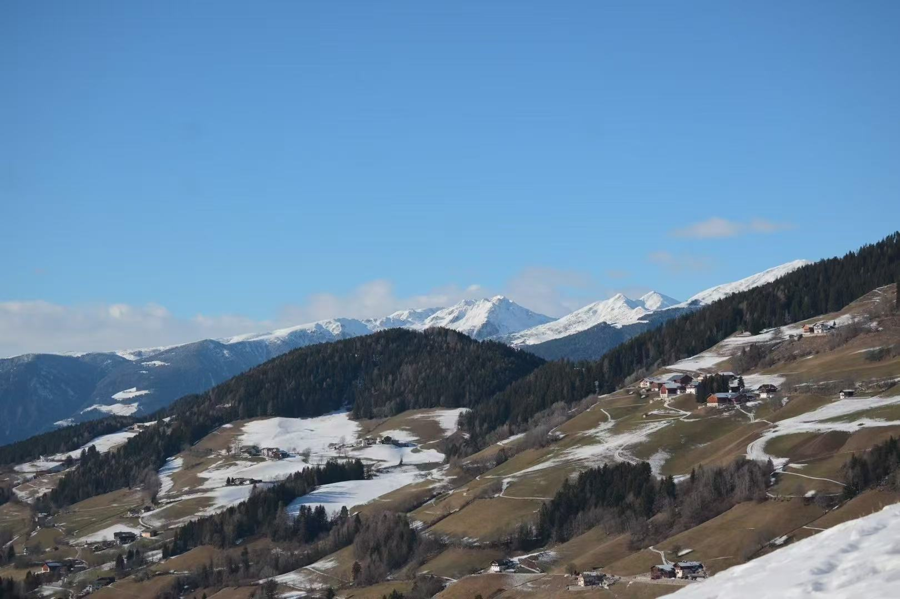
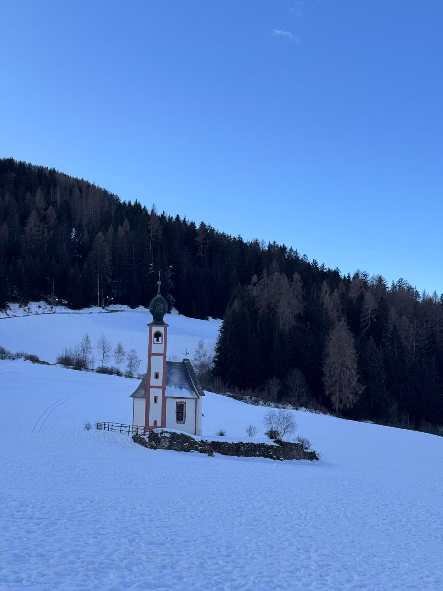

A Winter Tale in the Dolomites
Snowflakes, silence, and sky-touching spires


Day 1 — Alpe di Siusi & Sunset Spa 🏔️🛁
I began my Dolomites adventure on the snow-covered plains of Alpe di Siusi, gliding through crisp alpine air with the Sassolungo group in view.
As dusk fell, I sank into the outdoor thermal pools of QC Terme Dolomiti, steam rising into snowfall — a moment of complete stillness.

Day 2 — San Giovanni Church & Winter Trail ⛪❄️
In Val di Funes, I found the pink-towered Chiesa di San Giovanni beneath snow-kissed peaks — peaceful and picture-perfect.
I wandered a nearby trail, alone with the wind and the white, photographing mountains dressed in silence.